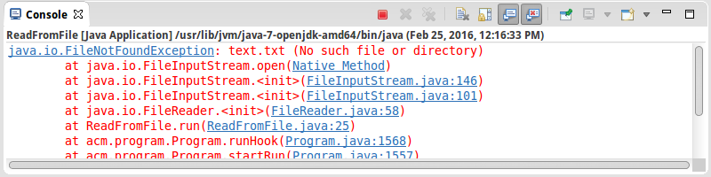
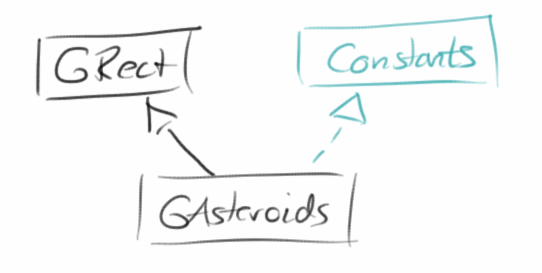
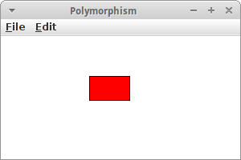
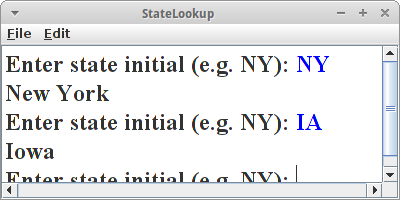

Stocks
Das Buch neigt sich dem Ende zu, was normalerweise bedeutet, dass es jetzt richtig interessant wird. Wir werden lernen wie wir mit Dateien umgehen, also lesen und schreiben. Dann schauen wir mal was so alles schief gehen kann und wie man das verhindert. Danach erweitern wir unseren Horizont was Datenstrukturen angeht. Die Objektorientierte Analyse kommt als nächstes, und zum Schluß kommen noch Interfaces und Polymorphie.
.
Files
Sobald wir den Computer ausschalten sind alle Daten futsch. Es sei denn man hat sie gespeichert. Gespeichert heißt man hat sie in eine Datei geschrieben. Das ist eigentlich ganz einfach. Wir fangen mit dem Lesen von Dateien an.
Zum Lesen aus Dateien muß man drei Dinge tun:
- die Datei öffnen,
- lesen von der Datei, Zeile für Zeile, und
- die Datei schließen.
Im Code sieht das dann so aus:
// open file
FileReader fr = new FileReader("text.txt");
BufferedReader rd = new BufferedReader(fr);
// read from file, line by line
while (true) {
String line = rd.readLine();
if (line == null)
break;
println(line);
}
// close file
rd.close();
fr.close();
In Java verwenden wir zum Lesen von Textdateien die Klasse FileReader. Der übergibt man einfach den Dateinamen der zu öffnenden Datei. Da der FileReader sehr dumm ist, er kann nämlich nur ein Zeichen nach dem anderen lesen, bittet man immer den BufferedReader um Hilfe: der kann nämlich ganze Zeilen lesen. Man übergibt den FileReader dem BufferedReader als Argument, damit der BufferedReader weiß welche Datei er denn lesen soll.
Dann benutzen wir einfach einen Loop-And-A-Half um Zeile für Zeile mittels der Methode readLine() aus der Datei zu lesen. Wir wissen, dass wir das Ende der Datei erreicht haben, wenn readLine() den Wert null zurückliefert. D.h. es gibt nix mehr zu lesen. Danach schließen wir die beiden Readers mit der close() Methode.
Leider funktioniert das Programm noch nicht ganz, weil es zu Fehlern (Exceptions) kommen kann. Dazu gleich mehr, aber vorher möchten wir in eine Datei schreiben.
.
Schreiben
Auch beim Schreiben müssen wir drei Dinge tun:
- die Datei zum Schreiben öffnen,
- dann in die Datei schreiben und
- die Datei schließen.
Schreiben ist einfacher als Lesen, weil wir keinen BufferedDingens brauchen:
// open file FileWriter fw = new FileWriter("test.txt", false); // write to file, one string at a time println("Enter text to write ('.' to quit): "); while (true) { String line = readLine(""); if (line.equals(".")) break; fw.write(line + "\n"); } // close file fw.close();
Wir verwenden die Klasse FileWriter zum Schreiben von Textdateien. Wir übergeben als erstes den Dateinamen in den wir schreiben wollen, und wir müssen sagen ob wir anhängen wollen oder überschreiben wollen, falls die Datei schon existiert. Wenn wir anhängen wollen, sagen wir "true", falls wir überschreiben wollen sagen wir "false", also nicht anhängen.
Dann benutzen wir wieder den Loop-And-A-Half um Zeile für Zeile mittels der Methode write() zu schreiben. Interessant ist vielleicht noch das '\n': es ist das Zeichen für new line, und sorgt dafür, dass der nächste String in der "test.txt" Datei in eine neue Zeile geschrieben wird.
Damit wir nicht in einer Endlosschleife hängen bleiben, checken wir ob der Nutzer einen Punkt eingegeben hat, das ist unser Abbruchkriterium. Danach schließen wir unseren Writer mit der close() Methode.
.
Exceptions
Was ist wenn was schief geht? Oder erst mal, was kann denn schief gehen? Es könnte z.B. sein, dass es die Datei die wir zum Lesen öffnen möchten gar nicht gibt. Dann kommt es zu einer FileNotFoundException. Eclipse zeigt die sogenannte StackTrace im "Console" Fenster:

An der Fehlermeldung erkennt man, dass es die Datei "text.txt" nicht gibt. Die StackTrace sagt einem auch wo denn der Fehler im eigenen Programm ausgelöst wurde. Dazu muss man die Klassen der Reihe nach durchgehen bis man seine eigene findet, in dem Fall oben ist das die ReadFromFile Klasse. Und dort steht "ReadFromFile.java:25", und die "25" ist die Zeilennummer in der das Problem auftrat. Wir können aber auch einfach auf den Link klicken, und Eclipse navigiert dann den Cursor an die problematische Stelle.
Kann noch was schief gehen? Ja. Z.B. könnte es sein, dass die Datei zwar existiert, wir sie aber nicht lesen dürfen, da wir keine Berechtigung dazu haben. Dann kommt es auch zu einer FileNotFoundException, aber dieses mal steht in Klammern "Permission denied". Auch beim Schreiben können Sachen schief gehen, z.B. kann es sein, dass wir keine Schreibberechtigung haben, oder es könnte sein, dass wir keinen freien Platz mehr auf der Festplatte haben.
Was passiert denn mit unserem Programm, wenn es zu einer Exception kommt? Es stürzt ab. Das kann sehr unangenehm sein, z.B. wenn das Programm ein Flugzeug steuert in dem wir sitzen, denn dann stürzt auch das Flugzeug ab. Nicht gut.
.
Try-Catch
Wir müssen also das Flugzeug auffangen, oder besser das Programm. Das machen wir mit catch: wir probieren erst mal (try) ob alles funktioniert, wenn ja gut, wenn nein, dann sagen wir dem Programm was es tun soll. Im Code sieht das dann so aus:
try {
// code for file access
...
} catch ( Exception ex ) {
// deal with exception
...
}
...
Wir umgeben also unseren problematischen Code mit einem try-Block. Klappt alles, dann macht das Programm ganz normal weiter (der catch-Block wird nicht ausgeführt). Geht aber was schief, dann bricht das Programm nicht ab, sondern springt in den catch-Block und führt diesen aus. Danach geht das Programm davon aus, dass wir alles unter Kontrolle haben, und führt den Code nach dem catch-Block aus, wie wenn nichts gewesen wäre.
Exceptions treten nicht nur beim Arbeiten mit Dateien auf, sondern auch in vielen anderen Umständen. Betrachten wir kurz die wichtigsten:
NullPointerException: ist wohl die am häufigsten vorkommende Exception. Sie tritt immer dann auf, wenn ein Objekt nicht existiert, also noch keines mit new angelegt wurde:
GRect fritz = null;
fritz.setColor(Color.RED);
ArithmeticException: tritt auf wenn eine mathematische Berechnung nicht möglich ist, der Klassiker, Division durch null:
int x = 5 / 0;
NumberFormatException: wenn wir versuchen aus einem String eine Zahl zu machen, und der String aber keine Zahl enthält:
int x = Integer.parseInt("five");
ArrayIndexOutOfBoundsException: wenn wir versuchen auf Elemente eines Arrays zuzugreifen, die es gar nicht gibt:
int[] eggs = { 0, 1, 2, 3 };
println( eggs[5] );
.
Data Structures
Bisher kennen wir nur eine Datenstruktur, das Array. Arrays sind zwar o.k., aber so richtig toll sind sie nicht. Viel cooler sind da schon die ArrayList und die HashMap mit denen wir uns gleich beschäftigen werden.
.
ArrayList
ArrayListen sind wie Arrays nur schlauer. Fangen wir an eine ArrayList zu deklarieren und zu instantiieren:
ArrayList<String> names = new ArrayList<String>();
Wir legen also eine ArrayList mit dem Namen "names" an, und in diese ArrayList dürfen nur <Strings> rein, das ist was die spitzen Klammern sagen. Im Prinzip ist es dasselbe wie wenn wir Arrays verwendet hätten:
String[] names = new String[10];
Allerdings einen Unterschied erkennen wir sofort: bei Arrays mussten wir sagen wieviele Strings wir reintun wollen, bei der ArrayList ist das nicht notwendig: die ArrayList kann nämlich wachsen und schrumpfen, je nach Bedarf. Das ist super-praktisch!
Machen wir weiter. Wir wollen jetzt ein paar Namen in unsere Namensliste einfügen, allerdings nur, falls der Name noch nicht in der Liste ist. Das geht so:
while (true) {
String name = readLine("Enter new name: ");
if (!names.contains(name)) {
names.add(name);
}
}
Wir fragen mit der Methods contains() ob ein bestimmter Name schon in der Liste ist. Falls nicht, dann fügen wir ihn mit add() hinzu. Wir müssen also auch keinen Index beim Hinzufügen angeben, neue Einträge werden einfach am Ende der Liste eingefügt. Wir können aber auch Einträge irgendwo in der Liste einfügen, dann müssen wir aber den Index angeben.
Wenn wir jetzt unsere Namensliste ausdrucken wollen, dann müssen wir über die Liste iterieren:
for (int i = 0; i < names.size(); i++) { println(names.get(i)); }
Mit der Methode size() können wir feststellen wieviele Einträge unsere Liste hat, und mit get() lesen wir den Eintrag an einer bestimmten Position. Zusätzlich hat die ArrayList noch folgende praktische Methoden:
- set(): ersetzt den Eintrag an einer bestimmten Position mit einem neuen
- indexOf(): sucht nach einem Eintrag und gibt die Position zurück
- remove(): entfernt einen Eintrag aus der Liste
- clear(): löscht die komplette Liste.
Also, wie wir sehen sind ArrayLists viel besser als Arrays, und deswegen nach langer Zeit wieder mal ein SEP:
SEP: Man sollte immer ArrayList anstelle von Array verwenden (Ausnahme sind Bilder).
.
HashMap
HashMaps sind wahrscheinlich die praktischste aller Datenstrukturen, weil man in ihnen super suchen kann. Klassische Beispiele sind Telefonbücher und Wörterbücher. Schauen wir uns das Beispiel PhoneBook mal näher an. Wir beginnen mit der Deklaration:
HashMap<String, Integer> phoneBook = new HashMap<String, Integer>();
Das sieht etwas ähnlich wie bei einer ArrayList aus, allerdings sind hier in der spitzen Klammern zwei Datentypen, ein String und ein Integer: <String, Integer>. Das erste ist der Schlüssel (key) und das zweite der Wert (value). Eine HashMap assoziiert also mit einem Schlüssel einen Wert, deswegen nennt man sie manchmal auch assoziative Arrays.
Fügen wir mal ein paar Werte in unser PhoneBook:
while (true) {
String name = readLine("Enter name: ");
int number = readInt("Enter number: ");
phoneBook.put(name, number);
}
Einfügen geht mit der Methode put(). Wir übergeben ihr einfach einen Namen und eine Nummer. Exisitiert der Name bereits in der Map, dann wird er überschrieben, falls nicht wird er neu eingefügt. In einer HashMap kann es nie zwei Einträge mit gleichem Namen geben, Schlüssel müssen eindeutig sein.
Nachdem wir unser PhoneBook gefüllt haben, wollen wir mal darin suchen, denn das ist ja wofür die HashMap gut sein soll:
String name = readLine("Enter name to search: ");
if (phoneBook.containsKey(name)) {
println(phoneBook.get(name));
} else {
println("no entry for this name");
}
Mit der containsKey() Methode können wir testen ob ein Name in der Map existiert, und mit get() können wir uns dann die Nummer zu dem Namen geben lassen. Das sieht zwar sehr ähnlich wie bei der ArrayList aus, ist aber viel cooler: bei der ArrayList müssen wir den Index des Eintrags kennen, bei der Map sagen wir einfach: gib mir mal.
Zum Schluß wollen wir mal sehen was in unserer Map drinnen ist:
for (String name : phoneBook.keySet()) { int number = phoneBook.get(name); println(name + ": " + number); }
Das ist jetzt komplett neu: die erste Zeile macht überhaupt keinen Sinn. Das Problem mit den Maps ist, dass es da keine Nummern mehr gibt. Wir können nicht sagen gib mir mal das zweite Element, denn eine Map hat keinen Index. Es gibt auch keine wirklich feste Reihenfolge, d.h. die Reihenfolge in der die Einträge ausgegeben werden, kann komplett anders sein als die Reihenfolge in der sie eingegeben wurden (wie man im Beispiel rechts sieht).
Deswegen der Trick mit der Pseudo-for-Schleife:
for (String name : phoneBook.keySet()) {
Die heißt soviel wie, gib mir mal einen Namen aus der Liste der Namen in der Map. Und danach, gibst Du mir den nächsten, usw. bis wir alle durch sind. Wenn man das akzeptiert hat, ist der Rest einfach.
.
Objekt-Orientierte Analyse
Wir befinden uns gerade an einem Übergang: und zwar verlassen wir gerade die prozedurale Ein-Klassen-Welt und betreten die objekt-orientierte Mehr-Klassen-Welt. Der Übergang ist nicht ganz schmerzfrei. Und wo uns bisher der Top-Down Ansatz wirklich gute Dienste erwiesen hat, hilft er uns jetzt nur noch im Kleinen, nicht mehr aber im Großen weiter.
Dafür gibt es jetzt aber die Objekt-Orientierte Analyse, manchmal einfach auch Anforderungsanalyse genannt. Bevor man also anfängt Code zu schreiben, überlegt man sich erst einmal was will man denn überhaupt. Das schreibt man dann am besten in möglichst einfachen Sätzen nieder. Z.B. könnten die Anforderungen für einen Webshop so fomuliert werden:
"Der Azamon Shop hat Artikel und Warenkörbe. Ein Artikel hat einen Namen, einen Typ und einen Preis. Ein Warenkorb hat einen Benutzernamen und eine Liste von Artikel. Wir können alle Artikel des Shops auflisten. Wir können alle Artikel in einem Warenkorb auflisten. Wir können einen Artikel in den Warenkorb legen. Wir können den Preis aller Artikel in einem Warenkorb berechnen."
Diese Anforderungen sind die Basis für unsere Objekt-Orientierte Analyse.
1.Schritt: In ersten Schritt dieser Analyse nehmen wir einen Farbstift und unterstreichen die Verben grün und die Substantive mit rot:
"Der Azamon Shop hat Artikel und Warenkörbe. Ein Artikel hat einen Namen, einen Typ und einen Preis. Ein Warenkorb hat einen Benutzernamen und eine Liste von Artikel. Wir können alle Artikel des Shops auflisten. Wir können alle Artikel in einem Warenkorb auflisten. Wir können einen Artikel in den Warenkorb legen. Wir können den Preis aller Artikel in einem Warenkorb berechnen."
2.Schritt: Im zweiten Schritt machen wir eine Liste für die Verben:
- hat
- auflisten
- auflisten
- legen
- berechnen
und die Substantive listen und zählen wir:
- Shop: II
- Artikel: IIIIIII
- Warenkorb: IIIII
- Name: I
- Typ: I
- Preis: II
- Benutzername: I
Das Zählen ist nicht unbedingt notwendig, hilft aber ein bischen zu erkennen was wichtig ist.
3.Schritt: Im dritten Schritt betrachten wir die Liste der Substantive. Welche der Substantive können wir mit einem einfachen Datentyp wie einem int, double, String etc. beschreiben?
- Shop: ???
- Artikel: ???
- Warenkorb: ???
- Name: String
- Typ: String
- Preis: int
- Benutzername: String
Wenn etwas kompliziert ist, also aus anderen Teilen besteht, wie z.B. Shop, Artikel und Warenkorb, dann handelt es sich um einen komplizierten Datentypen, also eine Klasse. Wir haben also unsere Klassen identifiziert: Shop, Artikel und Warenkorb.
4.Schritt: Im vierten Schritt geht es darum die richtigen Attribute den richtigen Klassen zuzuweisen. Dazu lesen wir einfach noch einmal unsere Anforderungen durch. Dort steht:
- "Der Azamon Shop hat Artikel und Warenkörbe.": also offensichtlich gehören Artikel und Warenkorb zum Shop, sind also Attribute des Shop.
- "Ein Artikel hat einen Namen, einen Typ und einen Preis.": also gehören Namen, Typ und Preis zum Artikel.
- "Ein Warenkorb hat einen Benutzernamen und eine Liste von Artikel": also gehören Benutzernamen und Liste von Artikel zum Warenkorb.
An dieser Stelle macht es auch Sinn auf Plural zu achten: jedes mal wenn ein Wort im Plural vorkommt, dann bedeutet das, dass wir eine Liste (oder Map) von dem jeweiligen Attribute benötigen. Z.B. aus "Liste von Artikel" oder "Warenkörbe" wird dann eine ArrayList.
Mit der Information können wir schon unsere Klassen mit Attributen hinschreiben:
public class Shop {
private ArrayList<Cart> carts;
private ArrayList<Article> articles;
}
public class Article {
private String name;
private String type;
private int price;
}
public class Cart {
private String userName;
private ArrayList<Article> articles;
}
5.Schritt: Beim letzten Schritt geht es darum die Methoden den richtigen Klassen zuzuweisen. Aus den Verben die wir im zweiten Schritt gesammelt haben, werden die Methoden (wir haben ja schon immer gesagt, dass Methoden Tun-Wörter sind). Wir gehen ein Verb nach dem anderen durch.
- hat: "hat" zählt nicht als Verb, da es Zugehörigkeit ausdrückt und schon im Schritt 4 verwendet wurde.
- auflisten: bezieht sich auf "Wir können alle Artikel des Shops auflisten", von daher gehört es zum Shop, und sollte artikelAuflisten() heißen.
- auflisten: bezieht sich auf "Wir können alle Artikel in einem Warenkorb auflisten", von daher gehört es zum Warenkorb, und sollte artikelAuflisten() heißen.
- legen: bezieht sich auf "Wir können einen Artikel in den Warenkorb legen", von daher gehört es zum Warenkorb, und sollte artikelInWarenkorbLegen() heißen.
- berechnen bezieht sich auf "Wir können den Preis aller Artikel in einem Warenkorb berechnen", von daher gehört es zum Warenkorb, und sollte preisAllerArtikelImWarenkorbBerechnen() heißen.
Und damit stehen unsere Klassen, ihre Attribute und Methoden fest:
public class Shop {
private ArrayList<Cart> carts;
private ArrayList<Article> articles;
public void listArticles() {
}
}
public class Article {
private String name;
private String type;
private int price;
}
public class Cart {
private String userName;
private ArrayList<Article> articles;
public void listArticles() {
}
public void addArticleToCart() {
}
public void calculatePriceOfArticlesInCart() {
}
}
Was noch bleibt ist sich zu überlegen welche Parameter die Methoden benötigen und was sie als Rückgabewert liefern. Es schadet auch nie, jeder Klasse einen Constructor zu geben. Und natürlich fehlt noch der Code.
.
 Interfaces
Interfaces
Wir kommen jetzt zum letzten Thema dieses Kapitels: Interfaces. Wir haben bereits gehört, dass es in Java keine Mehrfachvererbung gibt, also eine Klasse kann keine zwei Eltern haben. Bisher war das kein Problem, aber jetzt wo wir anfangen größere Programme zu schreiben, stellt sich das schon als ärgerlich heraus. Die Lösung ist, wer hätte es vermutet: Interfaces.
Interfaces erlauben uns zwei Dinge zu tun:
- Konstanten zwischen verschiedenen Klassen zu teilen und
- das Definieren einer Schnittstelle zwischen zwei Klassen, daher der Name.
Beginnen wir mit dem ersten. In dem Projekt MinesClone hatten wir ein Interface namens MinesConstant:
public interface MinesConstant {
/** Playing field should be 8x8 fields and 50 pixel per field */
public static final int FIELD_SIZE = 8;
public static final int PIXEL_PER_TILE = 50;
...
}
Wir hatten also alle Konstanten an einer Stelle. Damit diese Konstanten in anderen Klassen verwenden konnten, mussten wir in den Klassen MinesClone und MinesHelper dieses Interface implementieren:
public class MinesClone extends GraphicsProgram implements MinesConstant { ... } public class MinesHelper implements MinesConstant { ... }
Ganz einfach.
Kommen wir zum Definieren einer Schnittstelle zwischen zwei Klassen. Betrachten wir die ACM Grafikklassen: wir haben ja schon gehört, dass GLabel, GRect und GOval Kinderklassen von GObject sind. Zusätzlich gibt es aber noch ein Interface GFillable, und die Klassen GRect und GOval implementieren dieses Interface. Für GLabel macht das keinen Sinn, denn was soll denn bitte ein ausgefüllter GLabel sein?
Warum ist jetzt GFillable eine Schnittstelle zwischen zwei Klassen? Betrachten wir unser aller erstes Grafikprogramm BlueRect: Wir wollten ein ausgefülltes Rechteck zeichnen. Da GRect das GFillable Interface implementiert, wissen wir, dass GRect die Methoden setFilled() und setFillColor() hat. Also die Klasse BlueRect kann sich darauf verlassen, dass es diese beiden Methoden gibt. Umgekehrt verpflichtet sich die Klasse GRect, dass es diese beiden Methoden liefert, da sie ja das Interface GFillable implementiert. Es ist also ein Vertrag zwischen den beiden Klassen BlueRect und GRect. Manchmal wird das auch als "Design by contract (DbC)" [1] bezeichnet.
Wie muss jetzt das GFillable Interface aussehen?
public interface GFillable {
public void setFilled(boolean flag);
public boolean isFilled();
public void setFillColor(Color c);
public Color getFillColor();
}
Wir sehen also, in der Definition des Interfaces werden Methoden nur angedeutet, aber nicht implementiert. Die Implementierung muss in der jeweiligen Klasse erfolgen, Interfaces dürfen keinen Implementierungscode enthalten.
In der ACM Bibliothek gibt es noch die Interfaces GResizable, welches die Klassen GImage, GOval and GRect implementieren, sowie GScalable, welches die Klassen GArc, GCompound, GLine, GImage, GOval, GPolygon and GRect implementieren. Wir sehen also, obwohl es in Java nur Einfachvererbung zwischen Klassen gibt, so dürfen Klassen durchaus mehrere Interfaces implementieren.
.
Polymorphism
Polymorphismus bedeutet Vielgestaltigkeit. Und was hat das bitte mit Java zu tun? Schauen wir uns ein Beispiel an:
public class Polymorphism extends GraphicsProgram {
public void run() {
GRect frankWalter = new GRect(50, 30);
add(frankWalter, 50, 50);
fillWithRedColor(frankWalter);
for (int i = 0; i < 10; i++) {
moveByTenPixelToLeft(frankWalter);
pause(1000);
}
}
public void fillWithRedColor(GFillable rect) {
rect.setFilled(true);
rect.setFillColor(Color.RED);
}
public void moveByTenPixelToLeft(GObject rect) {
rect.move(10, 0);
}
}
Das GRect frankWalter ist vielgestaltig. Denn gegenüber der Methode fillWithRedColor() gibt es sich als GFillable aus, während es sich gegenüber der Methode moveByTenPixelToLeft() als GObject ausgibt. Es hat also zwei Gestalten, GFillable und GObject. Mehr ist da nicht.
So und damit sind wir am Ende. Wir kennen jetzt nämlich alle drei Säulen der objektorientierten Programmierung:
- Datenkapselung und Information Hiding
- Vererbung und Komposition
- Polymorphismus
.
Review
Es wurde wirklich Zeit, dass wir gelernt haben wie man mit Dateien arbeitet. Auch die Fehlerbehandlung hätte eigentlich schon viel früher kommen sollen, aber macht natürlich viel mehr Sinn wenn man mit Dateien arbeitet. Was wirklich neu und sich für die Zukunft als sehr nützlich erweisen wird, sind die Datenstrukturen ArrayList and HashMap. Die werden uns noch so manches Mal das Leben erleichtern. Und wir haben die Themen Interfaces und Polymorphie abgehackt.
Das wichtigste in diesem Kapitel war aber die Objekt-Orientierte Analyse, sozusagen Top-Down 2.0.
.
Projekte
Hat sich die Arbeit gelohnt? Ich denke die Projekte in diesem Kapitel geben eine klare Antwort: Ja!
.
CopyFile
Als kleine Aufwärmübung wollen wir eine Text-Datei kopieren. Der Nutzer soll angeben welche Datei kopiert werden soll. Die Zieldatei soll einfach "copy.txt" heißen.
Im Prinzip gibt es zwei Möglichkeiten dies zu tun: man könnte die gesamten Daten aus der ersten Datei in einen String lesen, und dann in einem Schwung in die Datei"copy.txt" schreiben. Der Nachteil dieses Verfahrens, es ist ungeeignet für sehr große Dateien. Deswegen wollen wir die zweite Möglichkeit umsetzen: Wir öffenen beide Dateien, die erste mit dem FileReader zum Lesen, die zweite mit dem FileWriter zum schreiben. Dann lesen wir Zeile für Zeile, und schreiben jede Zeile sofort in den FileWriter. Wenn wir dann fertig sind müssen wir natürlich beide Dateien wieder schließen.
.
Minutes
Manchmal sind wir in den Team-Meetings fürs Protokoll zuständig. Dann wäre es ganz praktisch ein Programm fürs Protokoll zu haben. Die Idee ist folgende: man tippt einfach einen Satz, drückt auf Enter und die Zeile wird in eine Datei namens "minutes.txt" gespeichert. Man öffnet also eine Datei mittels FileWriter, liest dann kontinuierlich (Loop-and-a-Half) Zeile für Zeile von der Console mittels readLine(), und schreibt jede Zeile sofort in die Datei. Natürlich benötigen wir noch ein Abbruchkriterium (Sentinel), das könnte einfach eine leere Zeile sein. Danach dürfen wir natürlich nicht vergessen die Datei zu schließen. Eine nützliche Erweiterung wäre wenn man an jede Zeile die Uhrzeit anfügt, wann der Text eingegeben wurde. Dann würde unser Programm wirklich seinen Namen verdienen.
.
WordCount
WordCount ist ein ganz einfaches Programm: liest eine bestimmte Datei ein und zählt die Zeilen, die Wörter und die Zeichen die diese Datei enthält. Wir verwenden den FileReader zusammen mit dem BufferedReader um Zeile für Zeile zu lesen. Wir benötigen drei Variablen zum zählen
int counterLines = 0;
int counterWords = 0;
int counterChars = 0;
(das dürfen lokale Variablen sein). Die Zeilen zu zählen ist ganz einfach, die Zeichen, auch denn mittels line.length() wissen wir wieviel Zeichen in einer Zeile sind. Für das Zählen der Wörter könnte man entweder den StringTokenizer nehmen, oder die Methode split() der String Klasse verwenden:
private int countWords(String line) {
String[] words = line.split(" ");
return words.length;
}
Die Methode split() ist etwas mit Vorsicht zu geniesen. Denn augenscheinlich sieht es so aus, wie wenn sie einfach einen String in seine Einzelteile zerschneiden würde, und diese Einzelteile in einem String-Array speichert. Das tut sie auch, allerdings stellt sich die Frage, nach welchem Kriterium schneidet sie denn den String auseinander? Im Gegensatz zum StringTokenizer, der einfach eine Liste von Trennzeichen nimmt um einen String zu zerteilen, verwendet die split() Methode Reguläre Ausdrücke. Solange wir also nicht wissen was Reguläre Ausdrücke sind (kommt nächstes Semester) sollten wir die split() Methode eigentlich nicht verwenden.
.
CreateFileWithRandomNumbers
Ab und zu (z.B. im nächsten Projekt) benötigen wir eine Datei mit ein paar Zufallszahlen. Das könnten aber auch Zufallsnamen oder Adressen oder was auch immer sein. Der Nutzer soll uns angeben wie die Datei heißen soll in die wir die Zufallszahlen schreiben sollen, dann benötigen wir den Bereich in dem die Zahlen sein sollen, und wir müssten noch wissen wieviele Zahlen wir generieren sollen. Das Programm soll dann mittels FileWriter und RandomGenerator eine solche Datei erzeugen. Für das nächste Projekt benötigen wir Zufallszahlen zwischen 0 und 100, und zwar 43 an der Zahl.
.
Histogram
Um sich z.B. mal ganz schnell einen Überblick über die Notenverteilung in einer Prüfung zu schaffen, kann man sich ein Histogramm ausgeben lassen. Man kann das natürlich mit einer tollen Grafik machen (kommt später), aber viel einfacher zu programmieren ist das mit einem Konsolenprogramm.
Wir wollen Punkte kummulieren, also zählen wieviele Klausuren Punkte zwischen 0 und 9, zwischen 10 und 19, usw hatten. Wir könnten z.B. ein Array für elf Zahlen definieren:
private int[] histogramData = new int[11];
und dann diese mit der Hilfe unseres Freunds Ganzzahldivision befüllen:
private void putScoreInHistogram(int score) {
histogramData[score / 10]++;
}
Die Zeile hat es in sich. Nach genügend langer Bewunderung können wir jetzt aber weiter machen.
Wir lesen also Zeile für Zeile aus unserer Scores.txt Datei, konvertieren die Strings mittels
int score = Integer.parseInt(line);
in Ganzzahlen und fügen die dann mittels unserer Wundermethode putScoreInHistogram() in unser Array. Wenn wir fertig sind, gehen wir das Array durch und geben es auf der Konsole aus. Wir könnten einfach die Zahlen ausgeben, viel hübscher sind aber kleine Sternchen (Asterisk nicht Asterix!):
private String convertToStars(int i) {
String stars = "";
for (int j = 0; j < i; j++) {
stars += "*";
}
return stars;
}
.
 Punctuation
Punctuation
Wenn wir so im Internet unterwegs sind, dann gibt es Programme (oder besser Algorithmen) die unsere Sprache automatisch erkennen können. Wir tippen ein paar Wörter und Satzzeichen ein, und schon kann uns das Programm sagen welche Sprache das ist. Wir können so etwas ähnliches auch ganz einfach bewerkstelligen.
Die Idee ist es die Satzzeichen, also ";:'",!?.", zu zählen. Das machen wir genauso wie im letzten Projekt (Histogram) und zeigen dann die Häufigkeit der Satzzeichen in einem Histogramm. Es stellt sich heraus, das jede Sprache ihre Lieblingssatzzeichen hat, und man an der Verteilung der Satzzeichen eine Sprache erkennen kann, natürlich muss der zu ananlysierende Text lang genug sein, und sollte typisch für die Sprache sein (Ulysses wäre also eher ungeeignet [2]).
Der Clou bei diesem Programm ist die Instanzvariable punctuation:
private String punctuation = ";:'\",!?.";
also ein String der alle möglichen Satzzeichen einthält. Wir haben hier das Zeichen '\"' speziell markiert, denn es ist die einzige Möglichkeit wie man das Anführungszeichen in einen String bekommt.
Wir lesen dann wieder Zeile für Zeile aus einer Datei die uns der Nutzer genannt hat, und analysieren jede Zeile
private void analyzeForPunctuation(String line) {
for (int i = 0; i < line.length(); i++) {
char c = line.charAt(i);
if (punctuation.contains("" + c)) {
int index = punctuation.indexOf(c);
histogramData[index]++;
totalNrOfPunctuations++;
}
}
}
Das ist ziemlich schwerer Tabak, aber eigentlich auch wieder nicht. Wir gehen ein Zeichen nach dem anderen durch. Sehen nach ob es ein Satzzeichen ist, und falls ja, erhöhen wir den Zähler für dieses Satzzeichen um eins. Außerdem haben wir noch einen Zähler für die Gesamtzahl der Satzzeichen, das erlaubt uns dann beim Anzeigen der Sternchen die Zahlen zu normieren.
.
WorldMap
Die Wikipedia hat eine Liste mit den Längen- und Breitengraden vieler Städte weltweit [3]. Wenn wir diese Liste, "Cities.txt", durchgehen und für jede Stadt ein GOval malen, dann können wir eine Weltkarte zeichnen. Wir verwenden also wieder die FileReader/BufferedReader Kombo um Zeile für Zeile aus der Datei zu lesen. Die Daten in einer Zeile
Germany, Berlin, 52, 32, N, 13, 25, E
müssen wir parsen, d.h. die Information so umformen, dass sie für uns nützlich ist. Für unsere Zwecke sind das Land und der Name der Stadt nutzlos. Mit der Genauigkeit nehmen wir es auch nicht so genau, deswegen genügt uns die Grad Angabe, also die 52, z.B.. Was wir allerdings noch benötigen ist ob sich die Stadt im Norden oder im Süden der Erdkugel befindet:
String[] data = line.split(",");
String lat1 = data[2].trim();
String lat3 = data[4].trim();
int lat = Integer.parseInt(lat1);
if (lat3.endsWith("S")) {
lat = -lat;
}
und das Gleiche für die Länge (longitude). Das Ganze skalieren wir noch, damit es in unseren Screen passt, also
double x = (0.5 - lon / 360.0) * WIDTH;
double y = (0.5 - lat / 180.0) * HEIGHT;
GOval city = new GOval(CITY_SIZE, CITY_SIZE);
add(city, x, y);
Sieht doch sehr hübsch aus, oder?
.
Editor
Im Swing Kapitel haben wir ja schon eine UI für einen Editor geschrieben. Endlich können wir auch Dateien lesen und schreiben. In der Methode saveFile() holen wir uns einfach den Text aus der JTextArea display mittels
String text = display.getText()
und schreiben den Text in einem Stück mittels eines FileWriters in eine Datei. In der Methode openFile() lesen wir Zeile für Zeile aus der Datei und zeigen sie dann in der JTextArea display mittels display.setText(text) an.
.
Quiz
Auch für unser Quiz Programm steht die UI bereits. Allerdings ist ein Quiz mit nur einer Frage nicht besonders nützlich. Außerdem sollte man verschiedene Quizzes mit unserem Programm halten können.
Wir beginnen mit den Fragen. Die sollten aus einer Text Datei kommen, dann kann man nämliche beliebige Quizzes halten. Für unser Beispiel ist das einfach eine Textdatei namens "Quiz.txt":
Correct: 1 + 1 = 2 ?; Yes; No; Maybe What is 2 ^ 2 ?; 2; 4; 8 A zebra has stripes?; Yes; No
Jede Zeile entspricht einer Frage mit den möglichen Antworten. Die Frage ist an erster Stelle, gefolgt von den möglichen Antworten. Frage und Antworten durch Strichpunkte getrennt. Diese Datei können wir Zeile für Zeile einlesen, und mittels der split() Methode kommen wir an Frage und Antworten:
String[] words = line.split(";");
Aus jeder Zeile machen wir ein Frage:
class Question {
String question;
String[] answers;
public Question(String[] words) {
question = words[0];
answers = words;
}
}
indem wir einfach dieses Array an den Konstruktor übergeben. Da die Klasse Question nur in unserer Quiz Klasse verwendet wird, kann es eine lokale Klasse sein, muss es aber nicht.
Nun ist die Frage, was machen wir mit den Fragen? Wir stecken sie alle in eine ArrayList:
private ArrayList<Question> questions;
Man könnte auch ein Array verwenden, aber dann müsste man im Voraus wissen wieviele Fragen ein Quiz hat, das wissen wir aber nicht. Zusammengefasst sieht das dann so aus:
while (true) {
String line = rd.readLine();
if (line == null)
break;
String[] words = line.split(";");
Question q = new Question(words);
questions.add(q);
}
Kommen wir zum Darstellungsteil unseres Programms. Wir benötigen natürlich eine actionPerformed() Methode für den Previous und Next JButton:
public void actionPerformed(ActionEvent e) {
if (e.getSource() == btnNext) {
currentQuestion++;
currentQuestion = currentQuestion % questions.size();
setQuestion(currentQuestion);
} else {
currentQuestion--;
...
}
}
Wir haben also einen Zähler, currentQuestion, der auf die momentan aktuelle Frage zeigt, also der Index in der ArrayList questions. Was noch bleibt ist die setQuestion() Methode.
private void setQuestion(int index) {
Question q = questions.get(index);
lbl.setText(q.question);
buildMultipleChoiceAnswers(q.answers);
}
Die holt einfach die momentan aktuelle Frage aus der ArrayList, und setzt unser Label mit der Frage und ruft unsere alte buildMultipleChoiceAnswers() Methode mit den Antworten auf.
Erweiterungen: Was noch fehlt ist dass die Antworten des Nutzers auch irgendwo gespeichert werden, und am Ende ausgewertet werden. Das ist nicht weiter schwer, braucht aber seine Zeit.
.
Dictionary
Wörterbücher sind eine typische Anwendung für eine HashMap. Als Beispiel wollen wir ein deutsch-englisches Wörterbuch implementieren. Das Wörterbuch halten wir als Instanzvariable:
private HashMap<String, String> dictionary = new HashMap<String, String>();
und im ersten Schritt müssen wir das Wörterbuch initialisieren:
private void initialzeDictionary() {
dictionary.put("hund", "dog");
dictionary.put("katze", "cat");
dictionary.put("fisch", "fish");
}
Wir fragen dann den Nutzer nach einem deutschen Wort mittels readLine() von der Konsole und der get() Methode
String english = dictionary.get( german.toLowerCase() );
erhalten wir dann das englische Wort. Ganz wichtig, die Übersetzung geht nur in eine Richtung.
.
StateLookup
Eine andere typische Anwendung für HashMaps ist wenn wir etwas suchen. Z.B. wir haben den Kürzel eines US-Bundesstaates (z.B. "NY") und würden gerne wissen um welchen Bundesstaat es sich denn handelt. Im Internet findet man Tabellen mit der Liste aller Bundesstaaten, z.B. in der Form:
AL,Alabama AK,Alaska AZ,Arizona ...
Wir lesen also Zeile für Zeile, und fügen diese in unsere HashMap ein:
private void readStateEntry(String line) {
int comma = line.indexOf(",");
String stateInitial = line.substring(0, comma).trim();
String stateName = line.substring(comma + 1).trim();
states.put(stateInitial, stateName);
}
(das kann man natürlich auch mit der split() Methode oder dem StringTokenizer machen). Der Rest funktioniert dann genauso wie im Projekt Dictionary.
.
VocabularyTrainer
Das Pendant zu einem Dictionary ist ein Vokabel-Trainer. Allerdings soll unser Vokabel-Trainer für beliebige Sprachen funktionieren, deswegen können wir nicht einfach die Vokabeln hardcoden, sondern sollten diese aus einer Datei lesen. In der Datei "Vocabulary.txt" sind die Vokabeln in folgender Form gespeichert:
dog,Hund cat,Katze fish,Fisch ...
Wir lesen also Zeile für Zeile und speichern die Vokabeln in einer HashMap namens vocabulary:
private HashMap<String, String> vocabulary = new HashMap<String, String>();
Was den Vokabel-Trainer jetzt aber vom Dictionary unterscheidet ist, dass er den Nutzer nach der Übersetzung eines englischen Wortes fragt. Ist die Antwort des Nutzers richtig, dann bekommt ein verbales Klopfen auf die Schulter. Wusste der Nutzer allerdings das Wort nicht, so müssen wir es in einer Liste von unknownWords speichern:
private ArrayList<String> unknownWords = new ArrayList<String>();
Am Ende sollten wir dann die Liste der Wörter die der Nutzer nicht wusste auflisten, damit er sie noch mal in Ruhe lernen kann.
.
VocabularyTrainerSwing
Konsolenanwendung sind zwar einfach, aber häßlich. Da wir aber die schwere Arbeit schon im letzten Projekt geschafft haben, machen wir daraus einfach eine Swing Applikation. Die besteht aus einem JLabel im Norden und einem JTextField im Süden. Wir zeigen dem Nutzer das zu übersetzende Wort im JLabel, und der Nutzer soll dann die Übersetzung im JTextField eingeben.
Für das Feedback an den Nutzer würden wir gerne eine Dialogfenster verwenden. In Swing geht das mit der JOptionPane:
public void actionPerformed(ActionEvent e) {
String english = englishLbl.getText();
String guess = germanTf.getText();
if (guess.toLowerCase().equals(dictionary.get(english))) {
JOptionPane.showMessageDialog(this, "Great job!",
"Check", JOptionPane.INFORMATION_MESSAGE);
} else {
JOptionPane.showMessageDialog(this, "Try again!",
"Check", JOptionPane.INFORMATION_MESSAGE);
}
setRandomWord();
}
Ansonsten, können wir den Code vom Projekt VocabularyTrainer wiederverwenden.
.
 Trains
Trains
Eine sehr schöne Anwengung für HashMaps sind Fahrpläne. Nehmen wir an wir wollen von München nach Berlin und es gibt aber keine direkte Verbindung. Dann sehen wir im Fahrplan nach und sehen, dass man von München nach Nürnberg fahren kann, und von Nürnberg gibt es einen Zug nach Berlin. So eine einfacher Fahrplan könnte einfach eine Textdatei sein, die alle Verbindung enthält:
Nuremberg > Berlin Nuremberg > Frankfurt Nuremberg > Munich Munich > Nuremberg Hamburg > Berlin
Wichtig ist hier, dass die Verbindungen zwischen Städten eine Richtung haben, also der Zug geht von Nürnberg nach Berlin, muss aber nicht zurück gehen.
Der nächste Schritt ist sich zu überlegen wie man so einen Fahrplan in einer HashMap unterbringt. Es ist klar, dass der Key der Ausgangsbahnhof sein muss. Da es aber mehrere Zielbahnhöfe geben kann, müssen wir hier eine Liste verwenden:
private HashMap<String, ArrayList<String>> connections;
Außerdem macht es auch noch Sinn eine Liste von allen Bahnhöfen irgendwo zu haben:
private ArrayList<String> cities;
Im setup() lesen wir also den Fahrplan und befüllen unsere beiden Datenstrukturen. Mit dem StringTokenizer trennen wir source von destination:
StringTokenizer st = new StringTokenizer(line, ">");
String source = st.nextToken().trim();
String destination = st.nextToken().trim();
Dann sollten wir checken, ob es den Ausgangsbahnhof schon gibt
if (!cities.contains(source)) {
cities.add(source);
connections.put(source, new ArrayList<String>());
}
und schließlich müssen wir die neue Verbindung hinzufügen:
ArrayList<String> cits = connections.get(source);
cits.add(destination);
Nachdem die Daten jetzt geladen sind, können wir mit dem eigentlichen Programm fortfahren. Als erstes sollten wir dem Nutzer eine Liste aller Ausgangsbahnhöfe auflisten. Daraus sollte er seinen Ausgangbahnhof wählen. Im nächsten Schritt listen wir die möglichen Zielbahnhöfe auf, und lassen den Nutzer wieder wählen. Das machen wir so lange, bis der Nutzer seinen Zielbahnhof erreicht hat, also den leeren String eingibt.
Erweiterungen: Was natürlich cool wäre, wenn der Nutzer einfach nur seinen Ausgangsbahnhof und Zielbahnhof eingeben könnte, und das Programm dann automatisch eine Route vorschlägt. Gegen Ende des nächsten Semesters können wir das auch.
.
 Adventure
Adventure
Auch eine schöne Anwendung für HashMaps sind Abenteuer Spiele. In vielen von diesen text-basierten Spielen geht es darum eine Welt zu erkunden, und Gegenstände einzusammeln. Wir konzentrieren uns hier auf den Erkunden Teil, aber der Einsammel Teil ist auch nicht so schwer.
Ähnlich wie beim Trains Projekt benötigen wir eine Beschreibung der Umgebung. Am einfachsten ist da eine Beschreibung unserer Wohnung. Also bei uns zu hause sieht das so aus:
hallway > kitchen hallway > living room hallway > bath room kitchen > hallway living room > hallway bath room > hallway bath room > kitchen
Auch hier verwenden wir wieder eine HashMap die den Plan unserer Wohnung wiedergibt:
private HashMap<String, ArrayList<String>> roomMap;
Da es sich um ein Erkundungsspiel handelt, benötigen wir keine Liste aller Räume, anstelle lassen wir den Spieler einfach in der Küche mit seiner Erkundung beginnen. Wir listen dann die Räume auf die von der Küche aus zu erreichen sind, und bitten den Spieler eine Wahl zu treffen. Auf diese Art und Weise kann der Spieler nach und nach unsere ganz Wohnung erkunden. Mit der Eingabe des leeren Strings endet das Spiel.
Erweiterungen: Für diesen Spieletyp gibt es zahllose Erweiterungen. Man könnte zum Beispiel die Welt aus StarWars oder Herr der Ringe auf diese Art abbilden. In den verschiedenen Räumen könnte man magische Gegenstände verstecken. Und manche Räume kann man nur betreten wenn man einen bestimmten Gegenstand hat, usw...
.
 BuildIndex
BuildIndex
Bücher aus Papier kann man nicht so leicht durchsuchen wie elektronische Bücher. Deswegen haben die meisten Bücher hinten einen Index, auch Stichwortverzeichnis genannt. Als Beispiel wollen wir eine Liste von Stichwörtern für das Buch "TomSawyer.txt" erstellen.
Wie üblich gehen wir Zeile für Zeile durch das Buch und benutzen den StringTokenizer
StringTokenizer st = new StringTokenizer(line, "[]\"',;:.!?()-/ \t\n\r\f");
um die Wörter aus eine Zeile zu extrahieren. Das ist eines der wenigen Male wo die split() Methode der String Klasse nicht funktionieren würde (es sei denn man beherrscht Reguläre Ausdrücke).
Wir gehen also alle Zeilen und alle Wörter (Tokens) durch und speichern diese in einer HashMap
private Map<String, Integer> words = new HashMap<String, Integer>();
Diese HashMap befüllen wir dann mit der folgenden Methode:
private void addWordToHashMap(String word) {
if (word != null) {
if (words.containsKey(word)) {
int count = words.get(word);
words.put(word, ++count);
} else {
words.put(word, 1);
}
}
}
denn wir wollen zählen, wie häufig ein bestimmtes Wort vorkommt. Jetzt müssen wir nur noch die Map auf der Konsole ausgeben.
Erweiterungen:
- Wenn wir die Liste betrachten, stellen wir fest, dass die meisten Wörter mit weniger als acht Buchstaben eigentlich nichts in einem Index verloren haben. Also sollten wir sie gar nicht in die Liste mit aufnehmen.
- Man könnte noch Wörter die im Plural enden herausfiltern (das ist im Englischen relativ einfach)
- Man könnte Wörter mit nutzlosen Endungen (im Englischen "ly", "ial", "ive", "ous", "ed") herausfiltern.
- Man kann auch eine Liste von Stoppwörtern haben und diese dann herausfiltern [6].
- Sortieren: wenn wir anstelle von HashMap eine TreeMap verwenden, dann ist der Index auf einmal sortiert. Warum das so ist, lernen wir nächstes Semester.
.
Languages
Was ist schon ein Wörterbuch, das von einer Sprache in eine andere übersetzt? Wir wollen ein Wörterbuch, das von einer Sprache in zehn übersetzt! Dazu muss man aber erst mal irgendwo die nötigen Daten finden. Glücklicherweise gibt es auf dem Website zu dem Buch "Introduction to Programming in Java" von Robert Sedgewick und Kevin Wayne [4] (übrigens ein Super-Buch) eine Datei die die Übersetzungen von über 800 englischen Wörter in zehn andere Sprachen enthält [5].
Die Datei "Languages.csv" enthält diese Daten:
"cat","kat","kattekop","kissa","chat, matou, rosse","Katze",...
Das erste Wort in jeder Zeile ist das englische Wort, gefolgt von der dänischen, der holländischen, usw., Übersetzung. Welche Sprache an welcher Stelle kommt steht in der ersten Zeile der Datei. Die Daten zu parsen wird nicht ganz einfach, wenn wir uns die französische Übersetzung für Katze ansehen, denn es gibt anscheinend mindestens drei Worte für Katze. Aber wenn wir nach Anführungsstrichen mit der indexOf() Methode suchen,
private ArrayList<String> parseLine(String line) {
ArrayList<String> translations = new ArrayList<String>();
while (true) {
int begin = line.indexOf("\"");
if (begin < 0)
break;
int end = line.indexOf("\"", begin + 1);
String s = line.substring(begin + 1, end);
line = line.substring(end + 1);
translations.add(s);
}
return translations;
}
dann ist das durchaus machbar. Die Methode parseLine() zerlegt also eine Zeile aus unserer Datei, und wandelt sie in eine ArrayList von Strings um. Diese ArrayList enthält also das englische Wort mit all seinen Übersetzungen. Deutsch ist an sechster Stelle, d.h. mit
ArrayList<String> translations = parseLine(line);
String german = translations.get(5);
erhalten wir die deutsche Übersetzung des Wortes. So parsen ist erledigt.
Ähnlich wie bei unserem einfach Dictionary Projekt, wollen wir ja nach Wörtern suchen, und dafür verwenden wir die HashMap:
private Map<String, List<String>> dictionary;
Allerdings speichern wir jetzt eben nicht nur ein Wort pro englischem, sondern zehn, und deswegen steht da auch List<String>. Die Liste zu befüllen ist ganz einfach:
ArrayList<String> translations = parseLine(line);
dictionary.put(translations.get(0), translations);
Das Übersetzen ist jetzt ganz einfach. Wir müssen nur wissen welche Sprache gewünscht ist (also z.B. 5 für Deutsch) und welches Wort übersetzt werden soll:
private String translate(String english, int lang) {
List<String> words = dictionary.get(english);
if (words != null) {
return words.get(lang);
}
return null;
}
Das if ist nötig um zu verhindern, dass unser Programm abstürzt falls wir nach einem Wort suchen, das nicht in unserer Datenbank ist.
Erweiterungen:
- wie könnte man von jeder der zehn Sprachen in jede andere der zehn Sprachen übersetzen?
- könnte man nicht nur Wörter, sondern ganze Sätze übersetzen?
- man könnte natürlich auch eine hübsche UI Anwendung dafür schreiben.
.
 StockCharter
StockCharter
Kommen wir zu unserem letzten und größten Projekt: StockCharter. Es geht darum Aktienkurse grafisch darzustellen. Wie üblich fangen wir aber einfach an.
In einem ersten Schritt schreiben wir ein ConsoleProgram, das im Süden einen JLabel, ein JTextField und einen JButton hat. Wenn der Nutzer dann einen Aktienkürzel (z.B. "msft") im Textfeld eingeben und auf den Knopf klickt, sollen im Konsolenteil die Daten zu der jeweiligen Aktie angezeigt werden. Der UI Teil sollte uns inzwischen keine große Mühe bereiten.
1. Aktienkurse
Kommen wir zu den Daten, den Aktienkursen. Es ist überraschend schwer an freie Daten für Aktienkurse zu kommen, aber glücklicherweise hat die Firma QuantQuote historische Kurse für den Standard & Poor’s 500 (S&P 500) Aktienindex zur freien Verfügung gestellt [7]. In diesem Index sind unter anderem Firmen wie Microsoft (msft), IBM (ibm), Ebay (ebay) und Netflix (nflx) gelistet. Die Daten sind in der Datei "SP500_HistoricalStockDataMonthly.csv" zu finden und sehen wie folgt aus:
,20130801,20130703,20130605,20130507,20130409,20130311,20130208,... ... msft,32.06,33.66,34.59,33.4157,28.5002,27.7355,26.9466,26.2568,... msi,55.07,57.11,56.9164,56.6377,63.0081,62.0605,59.6717,55.9545,...
D.h., es beginnt mit dem Kürzel der Firma, gefolgt von den Kursen. Den Datum des jeweiligen Kurses kann man der ersten Zeile entnehmen.
2. Datenbank
Der nächste Schritt ist es die Daten einzulesen. Wir beginnen mit der Klasse StockDataBase, die alle Daten enthalten soll, also unsere Datenbank. Wir öffnen die Datei "SP500_HistoricalStockDataMonthly.csv":
BufferedReader br = new BufferedReader(new FileReader(fileName));
// first line contains dates:
String line = br.readLine();
readDates(line);
// other lines contain data:
readStockPrices(br);
br.close();
Die erste Zeile enthält den jeweiligen Datum, d.h. wir verarbeiten diese in der Methode readDates() und speichern sie in der Instanzvariable dates:
private List<String> dates = new ArrayList<String>();
Danach lesen wir die ganzen Aktienkurse mit der Methode readStockPrices() Zeile für Zeile ein.
private void readStockPrices(BufferedReader br) throws IOException {
String line;
while (true) {
line = br.readLine();
if (line == null)
break;
StockEntry entry = new StockEntry(line);
stockDB.put(entry.getSymbol(), entry);
}
}
Dabei machen wir aus jeder Zeile einen StockEntry, und speichern diesen in unserer HashMap die alle Aktienkurse enthält ab:
private Map<String, StockEntry> stockDB = new HashMap<String, StockEntry>();
Ein StockEntry enthält alle Daten die zu einer Aktie gehören, und das sind Name und Kurs:
public class StockEntry {
private String symbol;
private List<Double> prices;
...
}
Die Klasse StockEntry benötigt also einen Konstruktor der eine Zeile parst und die eigenen Instanzvariablen symbol und prices initialisiert:
public StockEntry(String line) {
String[] sVals = line.split(",");
symbol = sVals[0];
prices = new ArrayList<Double>();
for (int i = 1; i < sVals.length; i++) {
if (sVals[i].equals("null")) {
prices.add(-1.0);
} else {
prices.add(Double.parseDouble(sVals[i]));
}
}
}
Außerdem benötigt sie noch eine getSymbol() und eine getPrices() Methode, und natürlich eine toString() Methode wäre auch noch schön.
Kommen kurz zurück zur StockDataBase Klasse: der fehlen noch zwei Methoden: findEntry() und getDates(). Die erste der beiden sucht nach einem gegebenen Symbol (z.B. "msft") und soll den dazugehörigen StockEntry aus der HashMap stockDB zurückliefern, die zweite soll einfach die Liste mit den Dati zurückgeben.
3. Console
Um zu testen, dass unsere Datenbank richtig funktioniert, fügen wir einen ActionListener zu unserem ConsoleProgram hinzu und implementieren die actionPerformed() Methode:
public void actionPerformed(ActionEvent e) {
StockEntry entry = db.findEntry(tfSymbol.getText());
if (entry != null) {
println(entry);
}
}
Natürlich mǘssen wir vorher unsere Datenbank mit
db = new StockDataBase("SP500_HistoricalStockDataMonthly.csv");
initialisiert haben. Das müsste eigentlich genügen um die Funktionsfähigkeit unserer Datenbank unter Beweis zu stellen.
4. Grafik
Kommen wir zum Grafikteil. Im erste Schritt, machen wir aus dem ConsoleProgram ein Program. Wir könnten auch ein GraphicsProgram machen, das hat aber gewisse Nachteile wie wir gleich sehen werden.
Da ein Program noch keinen Canvas hat, müssen wir selbst für einen sorgen. Wir fügen also zu unserem Hauptprogramm die Instanzvariable canvas hinzu:
private StockCanvas canvas;
und initalisieren diese in der init() Methode:
canvas = new StockCanvas(db.getDates());
add(canvas, CENTER);
d.h. der Canvas bekommt eine Referenz auf die Dati und wir fügen den Canvas in den CENTER Bereich unseres Programms. Ausserdem nehmen wir noch eine kleine Änderung an der actionPerformed() Methode vor:
public void actionPerformed(ActionEvent e) {
if (e.getActionCommand().equals("Graph")) {
StockEntry entry = db.findEntry(tfSymbol.getText());
if (entry != null) {
canvas.addEntry(entry);
}
} else {
canvas.clear();
}
}
Wir sehen also drei Anforderungen an unsere StockCanvas Klasse: Der Konstruktor bekommt eine Liste mit Dati, und es muss die Methoden addEntry() und clear() geben.
public class StockCanvas extends GCanvas {
private List<String> dates;
private ArrayList<StockEntry> entries = new ArrayList<StockEntry>();
public StockCanvas(List<String> dates) {
this.dates = dates;
}
public void clear() {
entries.clear();
update();
}
public void addEntry(StockEntry entry) {
entries.add(entry);
update();
}
}
Was jetzt noch fehlt damit alles hübsch wird, ist die update() Methode:
private void update() {
removeAll();
drawGrid();
drawEntries();
}
Erst wird mal alles gelöscht, dann soll das Hintergrundraster mit den Beschriftungen gezeichnet werden, und darin sollen dann die Aktienkurse gezeichnet werden. Das sind aber "einfach" nur ein paar GLabels und GLines an der richtigen Stelle.
5. Resizing
"One more thing..." wie Steve Jobs zu sagen pflegte: was passiert eigentlich wenn wir die Größe unseres Fensters verändern? Ooops, das sieht aber häßlich aus. Was müssten wir tun, damit das Programm sich bei veränderter Größe neu zeichnet? Dafür gibt es das ComponentListener Interface: unsere StockCanvas Klasse muss dieses implementieren:
public class StockCanvas extends GCanvas implements ComponentListener { public StockCanvas(List<String> dates) { this.dates = dates; addComponentListener(this); } ... }
im Konstruktor müssen wir uns selbst als ComponentListener hinzufügen, und es müssen zwingenderweise die folgenden Methoden hinzugefügt werden:
public void componentHidden(ComponentEvent e) {}
public void componentMoved(ComponentEvent e) {}
public void componentShown(ComponentEvent e) {}
public void componentResized(ComponentEvent e) {
update();
}
die alle nichts tun außer die letzte. Und das genügt schon, damit unser Programm sich neu zeichnet wenn sich die Größe verändert.
.
DrawingEditor
Wir wollen ein einfaches Zeichenprogramm schreiben. Die Idee ist, dass wir zwischen den Formen Rechteck und Kreis mittels zweier Radiobuttons auswählen können, außerdem wollen wir festlegen können, ob die Formen ausgefüllt sein sollen oder nicht, und natürlich möchten wir noch die Farbe der Formen bestimmen können. Wir wollen aber nicht nur Zeichnen können, wir wollen unsere Kunstwerke auch Speichern und wieder Laden können.
Wir beginnen mit der UI. Dazu übernehmen wir einfach unsere Vorarbeiten aus dem Kapitel zu Swing, wo wir bereits die UI für einen solchen DrawingEditor geschrieben haben. Allerdings verschieben wir die Auswahl der Form in den Norden, und im Süden platzieren wir zwei JButtons zum Laden und Speichern.
Natürlich soll unser DrawingEditor ein GraphicsProgram sein, sonst wird das nichts mit dem Zeichnen. Da die Formen per Mausklick erzeugt werden sollen, benötigen wir einen MouseListener, und da wir auch auf die JButtons reagieren wollen ist zusätzlich ein ActionListener notwendig. Das alles machen wir in der init() Methode.
Da wir später alle unsere Formen (GObjects) speichern wollen, müssen wir sie natürlich im Auge behalten. Das heißt, wir benötigen eine ArrayList als Instanzvariable in die wir alle GObjects hinzufügen:
private ArrayList<GObject> objects = new ArrayList<GObject>();
Arbeiten wir weiter an der mousePressed() Methode. Zunächst müssen wir wissen welche Form gewünscht ist. Wir fragen also die Radiobuttons:
GObject obj;
if (rBtnRect.isSelected()) {
obj = new GRect(SIZE, SIZE);
} else {
obj = new GOval(SIZE, SIZE);
}
Dann fragen wir die Combobox nach der Farbe,
Color[] colors = { Color.RED, Color.GREEN, Color.BLUE };
obj.setColor(colors[cBoxColorPicker.getSelectedIndex()]);
und schließlich sagt uns die Checkbox ob die Formen ausgefüllt sein sollen oder nicht:
GFillable flbl = (GFillable) obj;
flbl.setFilled(true);
Jetzt können wir die Form zum Canvas hinzufügen, aber wir sollten es zusätzlich in unsere Liste von GObjects einfügen:
objects.add(obj);
Damit ist der Zeichnen Teil geschafft.
Kommen wir zum Speichern unserer Kunstwerke. Bisher wenn wir Daten gespeichert haben, dann waren das immer Textdaten. Wie ist das aber mit binären Daten? Dafür gibt es die Klassen FileInputStream und FileOutputStream. Die erste zum Lesen, die zweite zum Schreiben. Das ist schon mal ne tolle Sache. Wer aber den Vogel abschießt, ist der ObjectOutputStream: der macht nämlich aus unseren Objekte serialisierte, binäre Daten. Wir müssen nur sagen writeObject(objects), und den Rest erledigt der ObjectOutputStream:
private void saveFile(String fileName) {
try {
ObjectOutputStream oos = new ObjectOutputStream(new FileOutputStream(fileName));
oos.writeObject(objects);
oos.close();
println("Save success.");
} catch (Exception e) {
e.printStackTrace();
}
}
Umgekehrt geht das beim Lesen ganz genau so einfach mir readObject():
private void openFile(String fileName) {
try {
ObjectInputStream ois = new ObjectInputStream(new FileInputStream(fileName));
objects = (ArrayList<GObject>)ois.readObject();
ois.close();
println("Load success.");
// add objects to canvas:
removeAll();
for (GObject obj : objects) {
add(obj);
}
} catch (Exception e) {
e.printStackTrace();
}
}
Da der ObjectInputStream ein bischen dumm ist, müssen wir noch einen Cast machen um wieder an unsere GObjects zu kommen. Und natürlich müssen wir die neuen GObjects noch zu unserem Canvas hinzufügen. Aber das war's dann wieder mal.
.
Library
Wir haben gesehen wie man mit Objekt-Orientierte Analyse aus Anforderungen (also Text) eine Programmstruktur mit verschiedenen Klassen erstellen kann. Genau das wollen wir jetzt mit dem Beispiel der Hochschulbibliothek machen:
"Die Hochschulbibliothek (Library) hat Studierende und Bücher. Eine Studierende hat einen Namen, eine Immatrikulationsnummer und eine Liste von Büchern die sie ausgeliehen hat. Ein Buch hat einen Autor und einen Titel. Eine Studierende kann Bücher ausleihen, sowie Bücher zurückgeben. Wir können alle Bücher auflisten lassen, die eine Studierende ausgeliehen hat. Wir können neue Studierende anlegen und wir können neue Bücher anlegen."
Es geht also darum die Klassen, Attribute und Methoden der Klassen zu bestimmen. Damit dies aber nicht nur eine theoretische Übung bleibt, wollen wir dann auch einen Schritt weitergehen, und das Programm wirklich schreiben. Hier macht es Sinn sich noch einmal kurz das Projekt InteractiveMenuProgram aus Kaptiel 3 anzusehen.
.
Mensa
Das Gleiche was wir für die Hochschulbibliothek getan haben, können wir natürlich auch für die Mensa tun:
"Die Mensa hat Gerichte und Zutaten. Ein Gericht hat einen Namen, einen Preis und eine Liste von Zutaten. Eine Zutat hat einen Namen, einen Preis und Kalorien. Es können neue Gerichte angelegt werden, sowie existierende Gerichte gelöscht werden. Wir können alle Zutaten auflisten, die zu einem Gericht gehören. Wir können neue Zutaten anlegen und wir können neue Gerichte anlegen."
Solange wir umsonst arbeiten, werden wir solche Aufträge im Stundenrhythmus erhalten.
.
NumberGuess
Bisher haben wir immer alleine programmiert. Was ist aber wenn mehr als eine Person an einem Programm schreiben sollen, wollen oder dürfen? Dafür gibt es Interfaces, also Schnittstellen.
Betrachten wir als Beispiel das Spiel NumberGuess. In dem Spiel geht es darum, dass der Computer eine Zufallszahl zwischen 0 und 99 wählt und der Spieler diese möglichst schnell erraten soll. Das Programm besteht aus zwei Teilen: dem Teil der sich um die Logik kümmert (NumberGuessLogic) und den Teil der mit dem Spieler interagiert (NumberGuessConsole). Wir haben also zwei Klassen, die allerdings beide voneinander abhängen. Diese Abhängigkeit wollen wir klar definieren, und das machen wir mittels einer Schnittstelle, also einem Interface:
public interface NumberGuessLogic {
/**
* guess should be number between 0 and 99 <br/>
* return 0 if guess was correct <br/>
* return +1 if guess was higher <br/>
* return -1 if guess was lower
*/
public int makeGuess(int guess);
}
Dieses Interface stellt einen Vertrag zwischen zwei Entwicklern dar.
- Für den einen (NumberGuessConsole) bedeutet es, dass es eine Methode makeGuess(int guess) geben wird, der ich die vom Spieler geratene Zahl übergeben kann, und die mir als Rückgabewert sagt, ob die Zahl zu klein, zu groß oder richtig war (-1, +1, 0).
- Für den anderen (NumberGuessLogic) bedeutet es, dass er eine Methode makeGuess(int guess) schreiben muss, die eine Zahl guess mit der intern generierten Zufallszahl vergleicht und dann Rückgabewert liefert der besagt ob die Zahl zu klein, zu groß oder richtig war (-1, +1, 0).
Dies erlaubt es zwei oder mehr Entwicklern unabhängig voneinander Code für ein Programm zu schreiben, der dann mühelos zusammengefügt werden kann.
Sehen wir uns das im Detail an. Wir beginnen mit dem Teil der das Interface NumberGuessLogic implementiert. Häufig nennt man Klassen die nichts anderes tun als ein Interface zu implementieren genauso wie das Interface, hängt aber noch ein "Impl" an den Ende des Namens:
public class NumberGuessLogicImpl implements NumberGuessLogic {
// instance vars
// constructor
public int makeGuess(int guess) {
...
}
}
Diese Klasse muss eine Methode namens makeGuess(int guess) haben, die jetzt natürlich auch etwas tun muss. Und natürlich muss irgendwo die Zufallszahl generiert werden, wahrscheinlich im Konstruktor.
Unabhängig davon kann der andere Entwickler bereits beginnen mit NumberGuessConsole Klasse. Dabei handelt es sich um ein ganz normales ConsoleProgram:
public class NumberGuessConsole extends ConsoleProgram {
public void run() {
NumberGuessLogic logic = new NumberGuessLogicImpl();
...
if (logic.makeGuess(guess) == 0) {
...
}
...
}
}
In diesem Programm benutzen wir die NumberGuessLogicImpl Klasse und tun so wie wenn sie schon existieren würde. Wenn dann beide Entwickler fertig sind, fügen wir die Klassen einfach in ein Projekt zusammen, und alles sollte problemlos funktionieren.
.
Fragen
-
Schreiben Sie ein Methode countLinesInFile(String fileName), die als Rückgabewert eine Zahl (int) gibt, die die Anzahl der Zeilen in der Datei mit dem Namen „fileName“ beinhaltet. Benutzen Sie dazu die Klassen BufferedReader und FileReader. Sie müssen kein Exception-Handling (try-catch) machen.
-
Schreiben Sie ein Methode readFromFile(String fileName), die als Rückgabewert einen String zurückgibt, der den kompletten Inhalt der Datei mit dem Namen fileName beinhaltet. Benutzen Sie dazu die Klassen BufferedReader und FileReader. Sie müssen kein Exception-Handling (try-catch) machen.
-
Wenn wir von Dateien lesen wollen verwenden wir in der Regel den FileReader. Wenn wir unseren Code schreiben, dann zwingt uns der Compiler immer um den ganzen Code einen 'try-catch' Block zu machen. Warum?
-
Im folgenden Code kann es zu Exceptions kommen:
BufferedReader rd = new BufferedReader(new FileReader("students.txt"));
while (true) {
String line = rd.readLine();
if ( line == null ) break;
println( line );
}
rd.close();
Wie müsste der Code modifiziert werden, also was müsste hinzugefügt werden, damit die Exceptions abgefangen (catch) werden?
-
Was hat es mit dem "null" auf sich?
-
Erklären Sie den Unterschied zwischen einem Array und einer ArrayList.
-
Was ist der größte Nachteil eines Arrays gegenüber einer ArrayList?
-
Nennen Sie zwei Beispiele wofür eine HashMap besser geeignet ist als eine ArrayList.
-
Gibt es einen Unterschied zwischen den beiden Code Beispielen unten?
ArrayList<String> nameList = new ArrayList<String>();
for (String name : nameList) {
println(" " + name);
}
ArrayList<String> nameList = new ArrayList<String>();
for (int i = 0; i < nameList.size(); i++) {
String name = nameList.get(i);
println(" " + name);
}
-
Hat ein Array auch Vorteile gegenüber einer ArrayList? Wenn ja, nennen Sie einen.
-
Nennen Sie zwei Beispiele wofür eine HashMap besser geeignet ist als eine ArrayList.
-
Geben Sie zwei Beispiele wofür man HashMaps gut gebrauchen kann.
-
In der folgenden HashMap soll ein Telefonbuch gespeichert werden:
private HashMap<String,Integer> phoneBook = new HashMap<String,Integer>();
Geben Sie kurze Codeschnipsel, die zeigen
a) wie man ein neue Telefonnummer einfügt,
b) wie man die Telefonnummer einer Person zugreifen kann und
c) wie man alle Telefonnummern auflistet.
-
In der folgenden HashMap soll ein englisch-deutsches Wörterbuch gespeichert werden:
private HashMap<String,String> dictionary = new HashMap<String,String>();
Geben Sie kurze Codeschnipsel, die zeigen
a) wie man ein neues Wortpaar einfügt,
b) wie man ein für ein gegebenes englisches Wort das entsprechende deutsche liest und
c) wie man alle Wörter auflistet.
-
Anforderungsanalyse (Requirements): In der Vorlesung haben wir die Anforderung des FlyTunesStore's analysiert. Benutzen Sie die selbe Technik um die Anforderungen des Journals für angewandte Informatik zu analysieren:
"Das Journal hat Artikel und Ausgaben. Ein Artikel hat einen Autor, einen Titel und einen Text. Eine Ausgabe hat einen Titel, eine Ausgabennummer und Artikel. Wir können alle Artikel auflisten lassen, alle Ausgaben auflisten lassen, sowie die Artikel für eine bestimmte Ausgabennummer. Wir können einen neuen Artikel anlegen und wir können neue Ausgaben anlegen."
Identifizieren Sie die notwendigen Klassen, Instanzvariablen und Methoden. Ausserdem ordnen Sie die Instanzvariablen und Methoden der richtigen Klasse zu.
-
Gibt es für die Klasse GLabel die 'setFilled()' Methode?
-
Was ist der Unterschied zwischen einem 'interface' und einer 'class'?
-
Wenn wir Grafikobjekte, z.B. GOvals in einem Array speichern wollen, müssen wir bei der Deklaration den Datentyp angeben, also,
GOval[] circles = new GOval[4];
Das bedeutet aber, dass wir nur GOvals in diesem Array speichern dürfen. Wie müssten wir den Code ändern, so dass wir beliebige Objekte (also auch GLine, GRect, etc) in diesem Array speichern dürfen?
.
Referenzen
Auch das letzte Kapitel zehrt von den Referenzen des zweiten Kapitel. Auch ein sehr schönes Buch, das jetzt in Reichweite gerückt ist, ist das von Robert Sedgewick und Kevin Wayne [4].
[1] Design by contract, https://en.wikipedia.org/w/index.php?title=Design_by_contract&oldid=700763992 (last visited Feb. 25, 2016).
[2] Ulysses, https://en.wikipedia.org/wiki/Ulysses_(novel)
[3] Latitude and longitude of cities, A-H, https://en.wikipedia.org/wiki/Latitude_and_longitude_of_cities,_A-H
[4] Introduction to Programming in Java, von Robert Sedgewick und Kevin Wayne
[5] Real-World Data Sets, introcs.cs.princeton.edu/java/data/
[6] Stoppwort, https://de.wikipedia.org/wiki/Stoppwort
[7] QuantQuote Free Historical Stock Data, https://quantquote.com/historical-stock-data
.